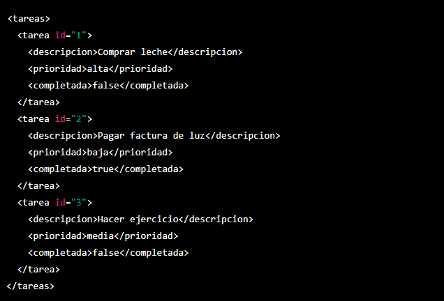

XML en Programación
Explorando XML: Una Guía Detallada
XML (eXtensible Markup Language) es un lenguaje de marcado versátil utilizado para almacenar y transportar datos. Su estructura jerárquica y legibilidad hacen que sea ideal para diversas aplicaciones. A continuación, exploraremos los conceptos clave de XML y cómo se utiliza en el desarrollo de software.
¿Qué es XML?
XML es un lenguaje de marcado que utiliza etiquetas anidadas para estructurar la información de manera jerárquica. Cada elemento puede contener datos y atributos, permitiendo una representación clara y organizada de la información.
Ejemplo de Documento XML
<book>
<title>El Viaje del Héroe</title>
<author>Autor Anónimo</author>
<year>2023</year>
</book>

Usos Comunes de XML
XML se utiliza en una variedad de contextos, desde la configuración de aplicaciones hasta la representación de datos en servicios web. Su flexibilidad y facilidad de lectura lo hacen popular en la transmisión de información estructurada.
Explora más sobre XML y cómo puedes incorporarlo en tu próximo proyecto. ¡Esperamos que esta guía te haya proporcionado una introducción sólida!